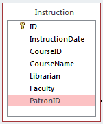
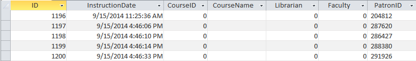
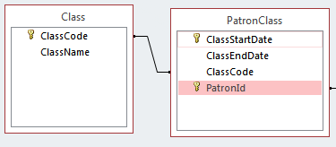

Database Basics
If you aren't familiar with how databases work, this appendix will help familiarize you with some of the concepts discussed in this document.
Tables, Records, and Fields
The basic concepts that make up a database are tables, records, and fields. A table is a collection of information that has a common structure. Each piece of information is called a record (or sometimes a row), and consists of a fixed set of fields (sometimes called columns). Fields have a number of different attributes, the most important of which are its name and type. Each field is of a fixed type (date, text, and number are examples of types), and has a name which is used to refer to it. You can think of a table as a very tightly controlled version of a spreadsheet, with very specific rules about what can go in each cell.
The image below shows a visual representation of the fields that make up a table. This table is called Instruction, and has seven fields, named ID, InstructionDate, CourseID, CourseName, Librarian, Faculty, and PatronID.

Tables can also be viewed in "Datasheet view" in Microsoft Access, which shows the rows that make them up. The image below shows a few rows from the Instruction table.

Keys
Each row in a table must be able to be uniquely identified. The fields that uniquely identify a row are called its "primary key". In the previous section, you can see that there is a key icon next to the ID field in the Instruction table. Records in one table are associated with records in other tables by including a field that lists the related record's primary key.

In the image above, you can see that both tables have at least one field marked with a key. Those are the primary keys for each table. The field in a table that indicates a relationship to another table is called a "foreign key".